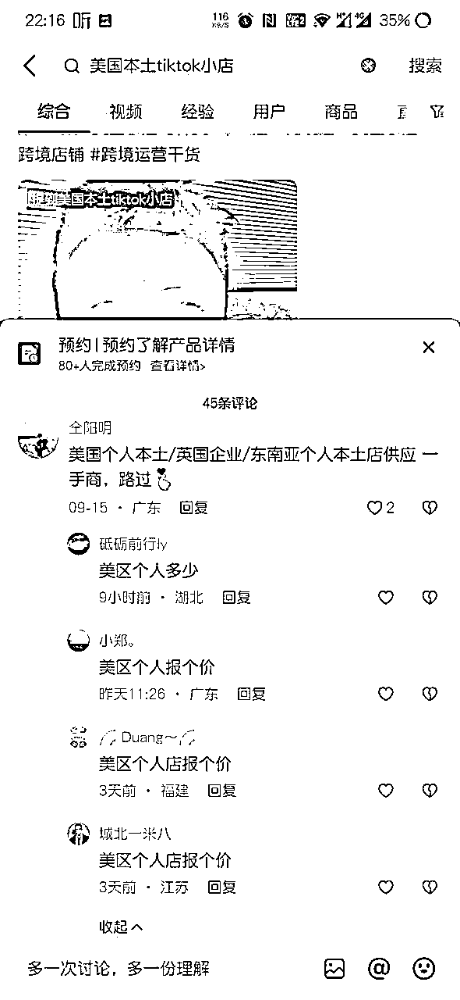

来源：https://kvtg1zi247l.feishu.cn/docx/UqLydYGxKoJxE3x8QSCc8nofnYd
大家好，我是墨鱼，简单介绍一下，一个日入4000的副业项目，不涉及国内法律政策风险。
符合高利润（50%——80%的利润，看定价），高复购（单店不过瘾，有同时买5家小店的老板，这玩意是个消耗品），高客单（客单在800——4000不等）的完美项目——TK美区本土小店，PS:目前还是蓝海。
不收你钱，只要你做，在你出单之后，我只收店铺成本，目的是快速建立起我的分销体系，快速放量。
有兴趣做的加我业务微信：XYCH0525（备注代理，不备注不通过）
为什么好做呢，我调查了这个市场大概三天，概括一下就是，国内做跨境电商的，错过了亚马逊、ebay、shopee、esty、wish、TK东南亚、shopify等等这些平台风口的，或者没有在这些风口上拿到大结果的，基本都把目光放到了美区TK小店上，大概讲一下：美区TK全球市场用户量第二，2023年Q2开始开放本土小店注册，Q3开始关闭半闭环交易，全心全意做站内成交，给了非常大的流量扶持，现在基本上是开店上品纯靠自然流就能出单。Q4又是众多节假日集中的一个季度（感恩节，圣诞节，黑色星期五，跨年），按照电商规律，GMV必定暴涨（今年美区预计50亿美元的GMV），所以现在正是开店、铺货的好时机，需求量很大。而美国本土小店注册有门槛，需要美国SSN驾照等真实资料注册，众多周知，越有门槛的事，只要你有相应资源，那就越好做，相信上半年做过GPT销售的朋友们肯定感同身受。
说一下我这边可以提供的资源：
一手渠道TK美国本土小店，真实资料稳定防封，代理价：个人店500，企业店700，售后我来负责，交付我来负责。
物流，虚拟仓，本土仓，刷粉刷单刷播放，自有货盘，工作机，IP节点，MCN代入驻，白号，千粉号，五千粉号，啥都有，有业务需求就可以扔过来
除了卖店，数据跟运营还有包括一些其他的层面上，如果手上有优质的渠道或者说价值体系的人，可以进行交流跟沟通，然后我可以打包运营提示，项目体系，技术体系出售。有付费意识的优先。如：这个
(最新版)Tiktok 美国小店超全解析
国内的公域我基本上都调查过了，目前几个平台搜关键词美国本土小店有流量有询单的只有两个，小红书和抖音
关键词域搜索流还未被抢占，没有出现头部IP，不管你是做图文、视频抢关键词还是评论区截流，都有比较大的操作空间。
小红书关键词：
抖音关键词：

公域引流大概就说一下基本情况，大家如果以前做过项目的熟悉这一块的那就比较好做，不熟悉的也可以操作起来，不管你是做图文笔记还是做视频，都有机会分一杯羹。
这个可能就比较吃TK知识了，不过不用担心，恶补几天知识，多找行内人交流就可以了。
私域引流获客的价值就比较高了，我目前做的所有询单和知识来源都是通过私域去获取的。具体操作方法是加群换群，群内发需求或者主动私信。


至于群聊怎么找，可以公域（公众号，抖音，小红书，今日头条，豆瓣，只要你能想到的，都可以去找一遍）搜索相关关键词，比如说跨境电商，看有没有相关博主或者IP，一般这种都会建群固私域的，放心大胆加，有三个好处：
第一，群内必然会有潜在价值的客户存在，可以在群里装逼，扮猪吃老虎，借机开展业务。
第二，可以获取跳出认知范围的信息差。
第三，可以资源链接嘛，很多项目谈。关于TK的所有资源我这边都可以提供。
https://www.cifnews.com/zhibo/3698?origin=zhibo_3727
制作SEO的思路，抢占关键词
1，你给的出货价是个人店500，企业店700。我的渠道售价是完全自己定吗，有没有最低保护价这一说？（避免代理相互压价）
答：有的，个人店渠道售价不要低于800，企业店不要低于1300。在这个前提下可以自己加价。
2，具体的对接流程是不是：①我客户付款给我--》②我付款给你拿到店铺资料--》③我再把店铺资料转给客户？
答：对接流程没有问题，路径就是你谈单→收款→在我这边记录，付款→我这边24小时之内交付。
3，客户拿到店铺资料后，除了收款账户外，邮箱和电话能不能修改?
答：这些资料都可以改，出单之后绑定
4，除了美国，英国和东南亚有没有店铺卖，价格分别是多少？
答：我们主攻美区，其他区域没有渠道，可以当信息贩子，自己找或者我帮你们找。
5.请问个人小店和企业小店在操作上有区别吗？
个人店和企业店除了限单不同之外，在我看来没有其他区别，个人店新手期限单100，企业店200
找一些服务商看一下他们话术； 然后修改一下价格就好，数据我这边提供，这边优化体系完成之后都会每日输出；
24小时内出问题可以随意更换；
可以配合二审；后续如果是资料问题导致店铺被封，我们配合二审解封或者直接换店；
（被封时邮箱会收到TK官方的邮件，会说明是什么原因导致的店铺封禁）
交付内容：
1：可以用买方自己邮箱和IP；
2: ads power指纹浏览器软件，
3:cookie
美国税号共有三种：SSN（社会安全号）ITIN（个人税号）EIN（联邦雇主号码）
注册小店时需要用到SSN进行注册，我们的帮忙注册的资料已经包括这些了。
① Outlook/Gmail等国外邮箱
② 美国银行卡用于收款
③双币信用卡，绑定缴纳刊登费（0.2美金/Listing）
④1-3款产品图片，用于开店上产品
⑤美国住宅IP，用于防关联和IP检测
⑥美国身份SSN，用于跳转审核
⑦美国真实地址，用于开店填写验证
⑧ 真实美国手机号
⑨ 店铺跳出1099K表格，用于后期店铺交税
⑩虚拟仓/真实海外仓，用于发货物流模板设定
美区个人1200企业1700资料问题包补。（举个例子，自己定价）
下店后可对接回款、虚拟仓，货盘等。后续一系列的问题都可以及时找我。
交付店铺后第一时间更改店铺密码和更换邮箱！如不更换封店不补。
A:100家可能封1到5家左右 还是因为客户操作不当
我们跟其他公司不太一样，就是因为我们的资料是真实，是走美国地推拿到的一手真实资料，股东在美国开网吧的，没有办法像他们这种刷库刷出来的直接给。公司规定了，这种还是怕给出去，风险太大怕拿着资料乱弄，如果过程中因为资料出了什么问题，随时跟我沟通就行了，都会帮忙解决的。
资料真没办法给，没办法拿一家店的风险去对整个渠道，如果是一个店的风险出问题，渠道毁了，我们这边也会说宁愿不卖。
1：下了店铺之后，看自己的运营手法怎么出单，是走哪条路；根据自身优势去走适合自己的路径；
2：店铺必须配比指纹浏览器;IP;coken； 交付时候会给； IP使用时期一个月；
3：没有绑定TITKOK账号； 可以另行购买或者自己注册；
风控才会触发二审，这个因素很复杂，因为TK的政策一直都在变，而风控的主要因素是店铺操作问题。
所以说大部分需要二审的店铺，基本上都是有问题的店铺。所以我特别不理解五六千买个过二审店铺的，花钱喜当爹？
我们自己店群一百多家店，到现在触发二审的也有个十多家了，我们自己用流水单，手持资料，人脸识别都提交申诉了，过的概率还是一半一半，也可能是样本量太小吧，不过我是感觉，过二审真是个运气问题。
过了二审后店铺还有个三审，又涉及到税务啊，流水等等一系列问题，除非你能去美国找到资料本人，甚至说找到了也没用，大概率最后的下场还是封店。
1:24小时资料问题导致店铺出问题我们售后
2: 交付24小时之后，店铺没有被封基本都不会再出问题了
3:字节的政策如果没有进行倾斜，我们手上有100多家店，到现在为止没有出过问题，只是死亡率的话大概有20%。100家里面，有20来家是因为资料问题ssn税号导致店铺被封。
1、需要使用独立IP 干净网络登陆店铺，不然使用其他 vpn,和不干净的进去都是必封的!
2、进去不要立马换绑电话跟邮箱，其实换不换都没事，手机卡在那里，出了单在换绑。
3、上产品不要使用不干净的APIERP 不然也会被封，推荐妙手，或者手动上架商品,达人邀约软件也要看 API稳定性
4、绝对不要上敏感的商品，也会被封的，具体参考 TK 卖家大学。
5、封过店铺的电脑最好重装下系统重新来，一个店铺不要有两个或两个以上国家的店铺同时登陆，即使有指纹浏览器或者 ERP 也会关联到的。
6、店铺到手一定要登陆店铺查看，上架产品增加店铺活跃度，每隔一个礼拜需要登陆店铺查看，或者更新商品，以免被误封不活跃店铺，一个月内不登录店铺一定会封号!
这个我给大家解答下，在入驻后我们和本土客服进行了沟通实际情况，表达了税务怎么办的一个疑问，这边获得的答复是。
我们不需要担心平台这边的税务问题，因为平台会代缴商品交易中产生的税务，当然最终承担者还是我们。
只是因为我们是在平台中进行交易的行为，所以是平台代缴，这个相信有做TikTok小店的都能理解，在每次我们每笔的回款账单那边会显示这个代缴的税务款。
而我们要去自主解决的是交易回款后，公司这边产生的收入税务，当然这个跟国内一样，找个代理记账公司就可以解决了，由这个公司帮我们做公司税务报账即可。
所以在税务上面大家不用太担心，只要你的公司有把EIN申请好就可以了。
物流跟大家说明的是平台物流用的当地物流，USPS或者是UPS，同时允许卖家选择自发货，自发货可以选择的物流相对就比较多，国内很多非常完善的货代公司都可以选择。
目前TikTok美国本土店的回款跟其他地区一样，是用美国银行账户回款，相较于东南亚本土店银行匮乏。
美国的收款服务商是非常多的，同时也非常便捷，用万里汇、派安盈、空中云汇这些可以开具美国银行的都是可以解决的。
和其他地区本土店一样，目前美国本土店对于产品类目基本不做什么限制，根据客服的答复，除了黄金，食品和针对儿童的产品暂时没有开放外，其他都是正常去经营就行。没有像跨境店一样很多类目需要报白名单才能经营。
本土店：美国本土店只有个人/企业； 需要美国本地人的驾照+税号注册；新店限制100单/日 ；
企业店：需要在美国有本地公司/ 然后有本地企业直接认证； 新店限制200单/日
跨境店： 内测开放，有年收入200w左右亚马逊做辅助基础的可以：
1：上自己的产品卖货；
2：邀约达人；邀请网红带货；
3：直播带货；
4：短视频带货(最常见的运营手法）